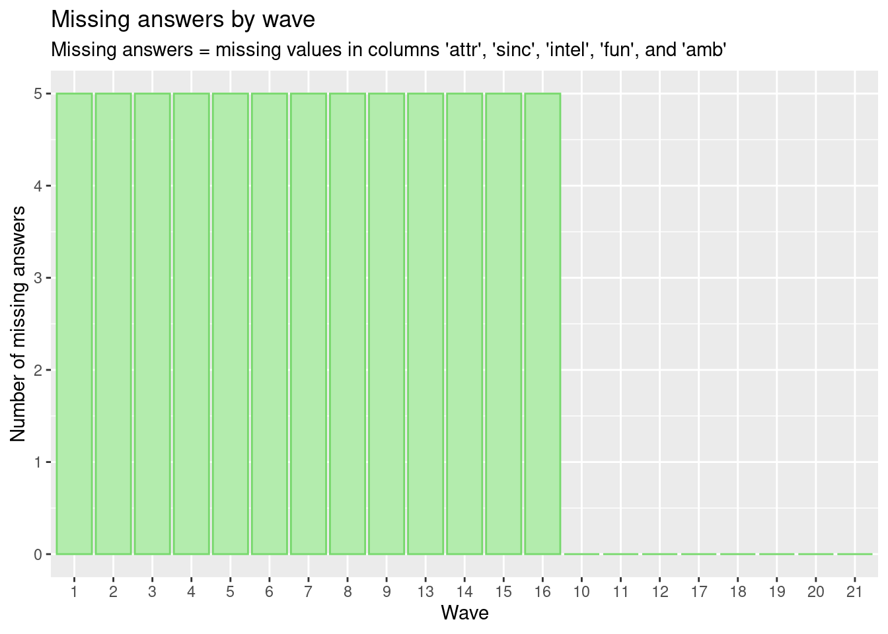
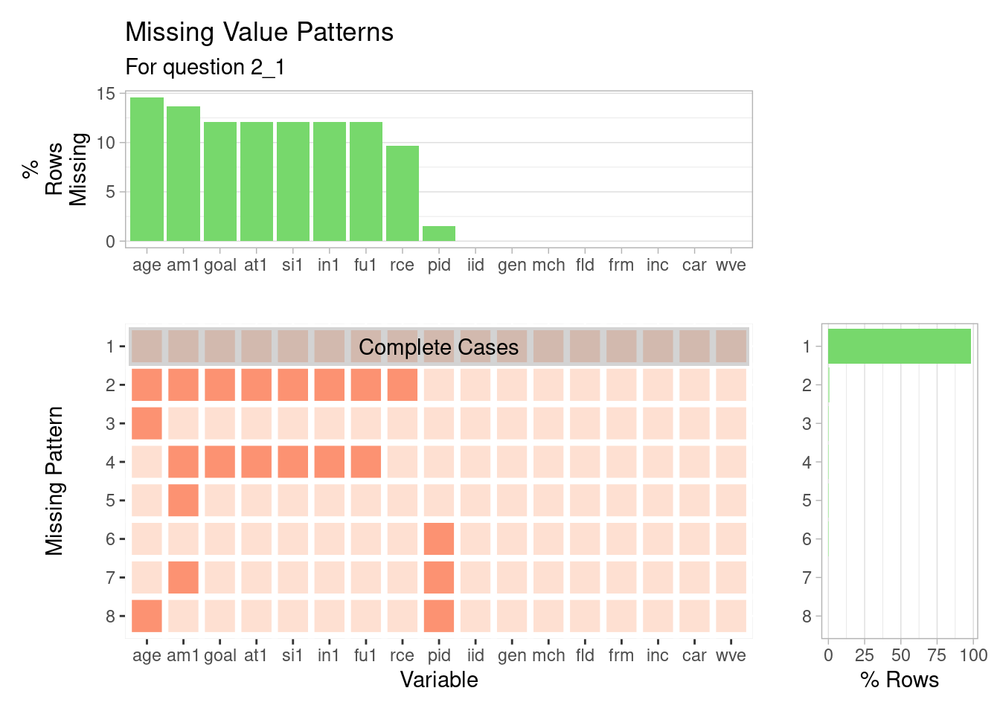

SPEED DATING ANALYSIS
1
Introduction
2
Data sources
2.1
The Experiment
2.2
Data Description
2.3
Issues with the data
3
Data transformation
4
Missing values
4.1
Number of missing attributes for each wave per question - Bar plots and Cleaveland Plots
4.2
Heatmap
4.3
Missing patterns question
5
Results
5.1
Representation of paricipants by different categories
5.2
Number of yes matches per participant
5.3
Analysing correlation between the chosen variables
5.4
Analysis of decision making on categorical variable - Race
5.5
Analyzing the Interesting variables from Correlation plots
5.6
Change of feature perception with time
5.6.1
SRIVIDYA PART
6
Subsetting Dataset
7
Subsetting Dataset
8
Interactive component
9
Conclusion
10
Results
10.0.1
SRIVIDYA PART
Published with bookdown
Speed Dating Analysis and Visualization
Chapter 6
Subsetting Dataset

